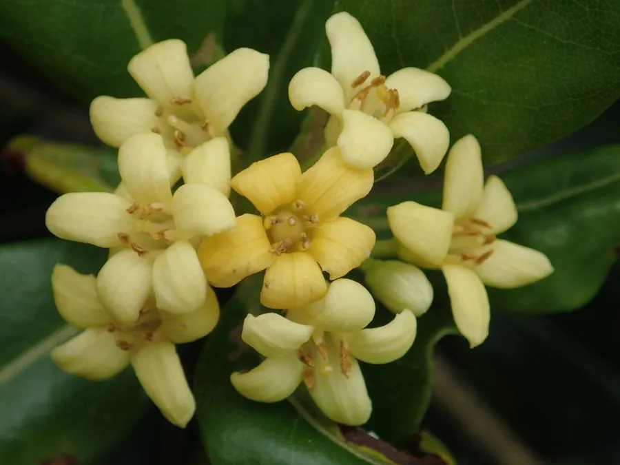

灌木与花木 · 植物界
海桐 Pittosporum tobira

中国南方常见的常绿灌木，叶片革质光亮、聚生枝顶，初夏开白色小花、香气浓郁，是优良的绿篱与观赏植物。
- 分类
- 门被子植物门纲木兰纲目伞形目科海桐花科属海桐花属
- 栖息环境
- 海拔 800 米以下的海岸、山坡与城市绿地，喜光耐阴，抗污染
- 地理分布
- 中国福建、浙江、江苏、广东、台湾等地，日本、朝鲜半岛也有分布
- 保护级别
- 暂无评估；中国未列入国家重点保护野生植物名录
物种志
海桐为常绿灌木，高可达 3 m，树冠圆球形，枝条稠密；叶片聚生于枝顶，倒卵形，革质，边缘全缘并微反卷，表面深绿有光泽。花期 5–7 月，伞形花序顶生，花白色后转淡黄，花径约 1 cm，花瓣 5 枚，芳香浓郁；蒴果卵圆形，成熟时开裂，露出鲜红色种子，观赏期长。
海桐原产中国福建、浙江、江苏、广东、台湾等地及日本、朝鲜半岛，中国长江流域以南广泛栽培，喜光、也耐半阴，耐寒性较强，适宜疏松肥沃、排水良好的土壤。因抗污染能力强、耐修剪，常被用作城市绿篱、厂区绿化与海岸防护林；叶片常绿光亮、花香浓郁，也是优良的庭园观赏灌木。根与叶可入药，有祛风活血之效；种子可榨油。海桐的俗名“七里香”与另一种同名植物容易混淆，需注意区分。
形态与习性
- 株高可达 3 m，树冠圆球形
- 花期5–7 月，花白色后转淡黄
- 果期9–11 月，蒴果开裂露出红色种子
- 光照喜光，也耐半阴
- 水分耐旱，怕积水
- 土壤疏松肥沃、排水良好的壤土
- 主要用途绿篱与厂区绿化、海岸防护、庭院观赏
趣味知识
- 海桐的叶片聚生在枝顶、革质光亮，是它最易辨认的形态特征。
- 海桐初夏开白色小花，香气浓郁，因此民间也叫它“七里香”。
- 海桐抗污染、耐修剪，常被用作城市绿篱与厂区绿化植物。
- 海桐的蒴果成熟开裂后露出鲜红色种子，观赏期可以持续很久。